Lavori di Ampliamento
Ecco le foto che testimoniano i vari interventi di ampliamento effettuati dal
CAI Sovico durante la gestione del rifugio Mario Del Grande - Remo Camerini.
1. Gli ultimi lavori del 2012 con la costruzione del bivacco invernale e il nuovo bagno ospiti
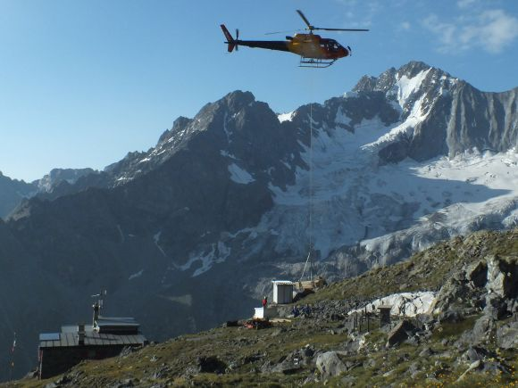
1. Il trasporto delle attrezzature da cantiere presso il rifugio
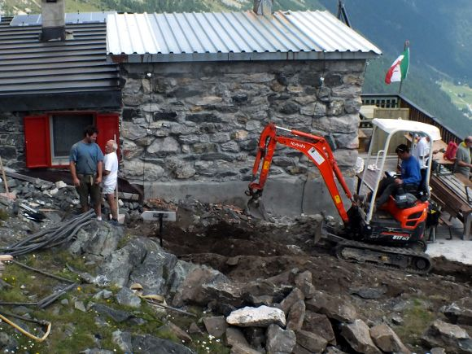
2. Inizio lavori con la rimozione di alcune rocce vicine al rifugio
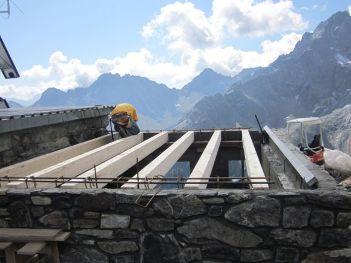
3. Posa del tetto in legno
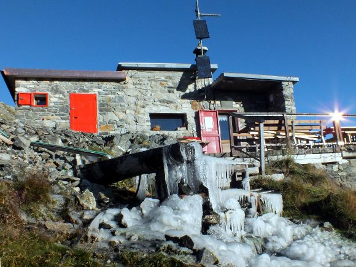
4. Vista di insieme rifugio e bivacco
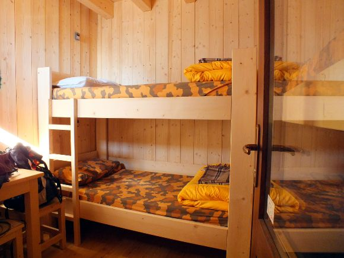
5. Vista interna del bivacco
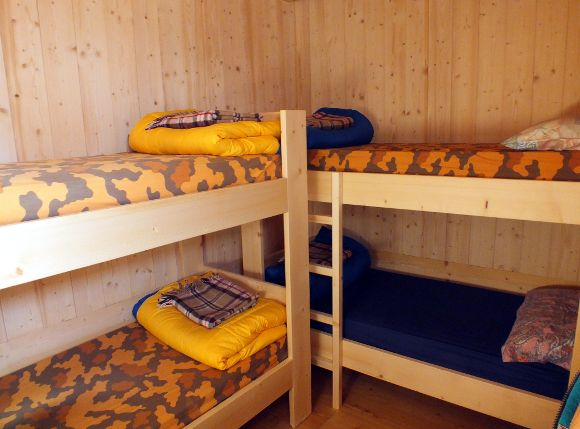
6. Vista interna del bivacco con i 4 posti letto
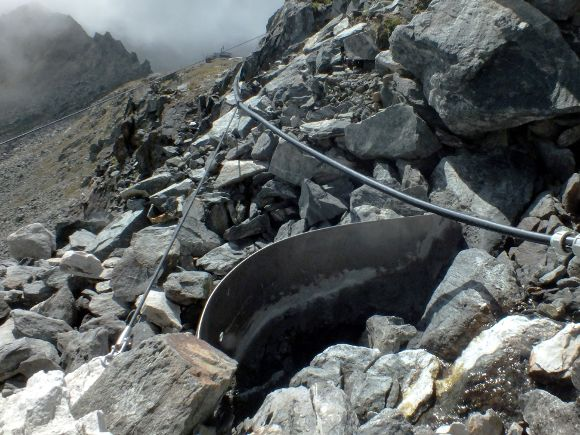
7. La piccola diga in acciaio per la presa delle acqua
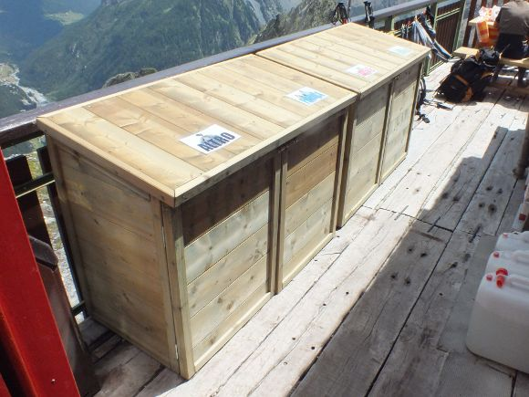
8. I nuovi cassoni per coprire i bidoni dei rifiuti
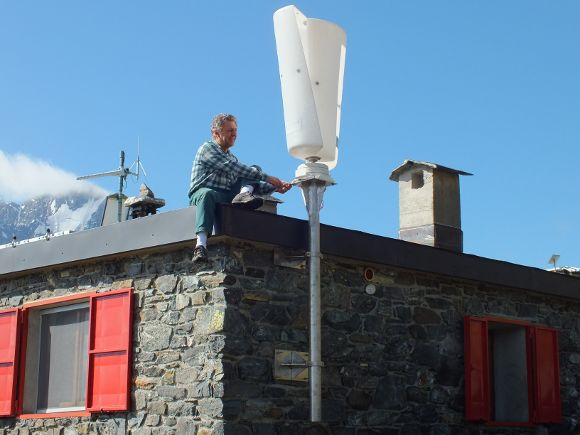
9. Nuovo generatore microeolico da abbinare a quello solare
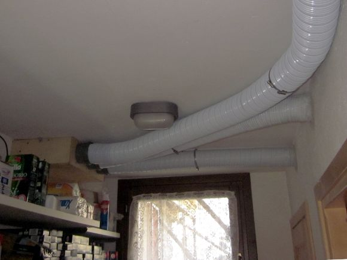
10. Condotte di aria calda per riscaldare la zona gestori
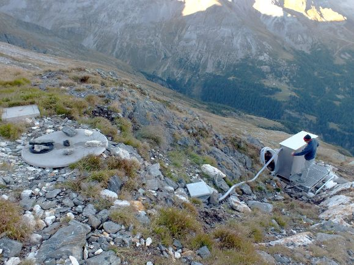
11. Filtro per scarico vasca imhoff
<
>
2. I lavori di miglioramento eseguiti negli ultimi anni dal 2008 al 2011
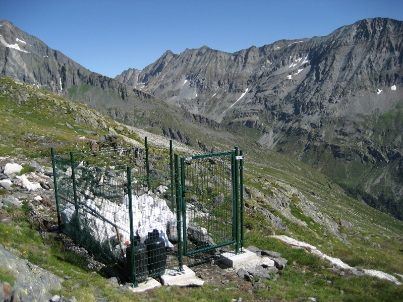
1. Il nuovo recinto per i rifiuti costruito è amovibile
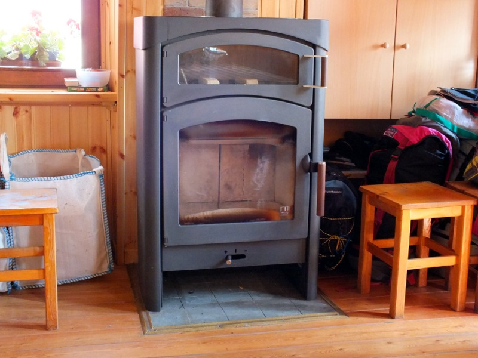
2. La potentissima stufa con il forno usato anche per fare il pane
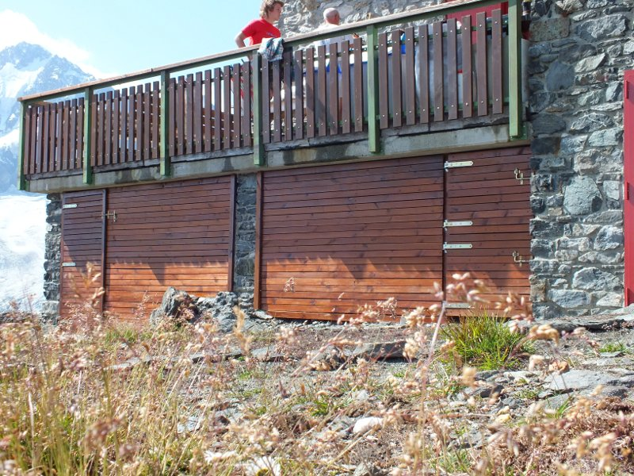
3. Antoni in legno per chiudere i vani sotto la balconata
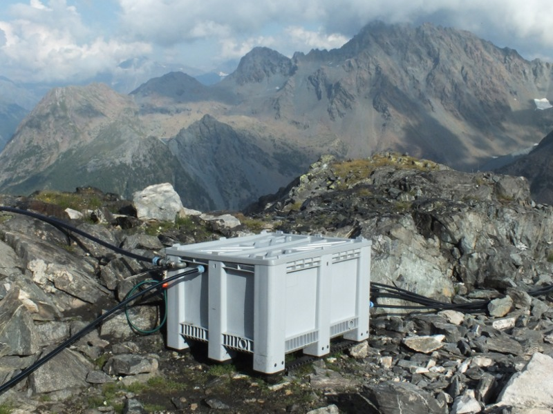
4. La nuova e più grande vasca per la raccolta dell'acqua
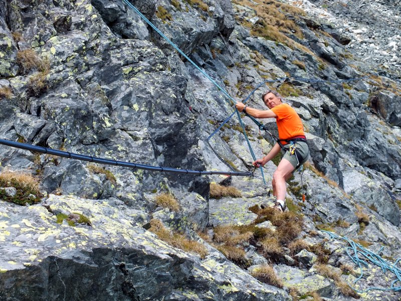
5. La posa della tubazione del nuovo impianto idraulico
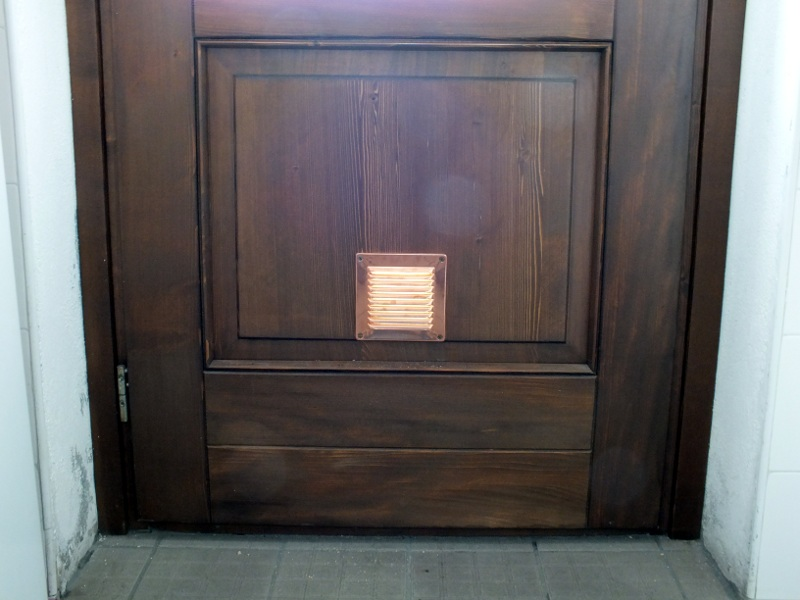
6. Installata una presa di aerazione sulla porta della cucina
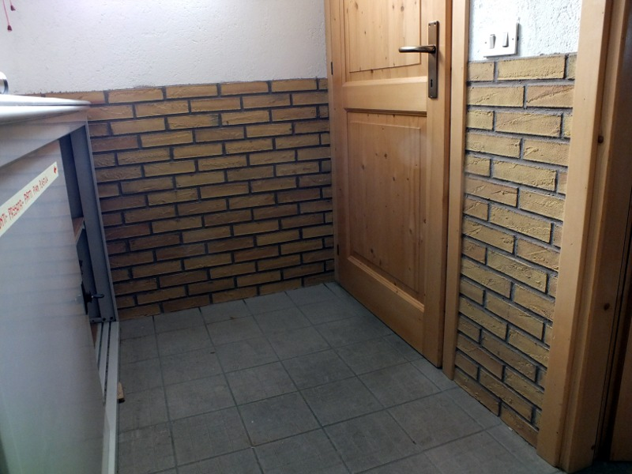
7. Piastrellato il corridoio che porta alle camere interne
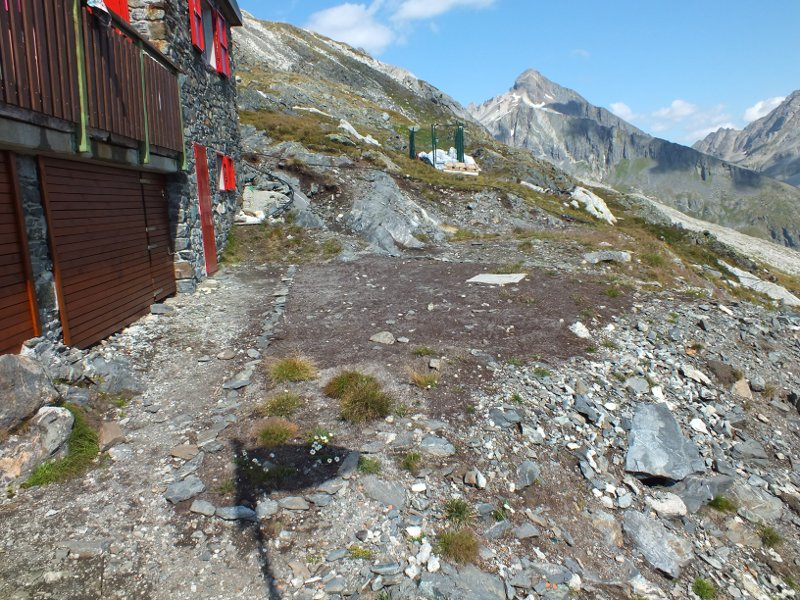
8. Ricoperto con terriccio e seminato nella zona davanti al rifugio
<
>
3. Foto dei lavori dal 2005 l'inizio dei lavori di ampliamento, fino al 2008
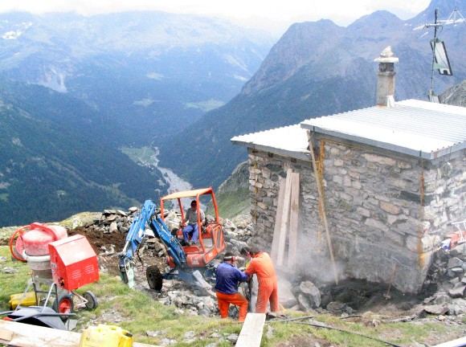
1. Le fasi di scavo a fianco della parte preesistente
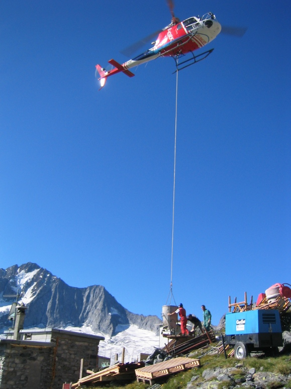
2. Il Cemento Armato per le gettate portato in quota con un elicottero
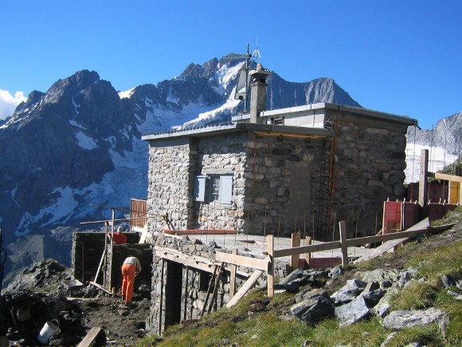
3. La gettata per la soletta della nuova ala del rifugio
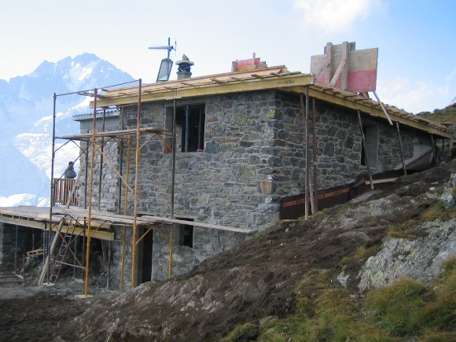
4. La costruzione dell tetto in cemento armato per reggere la neve
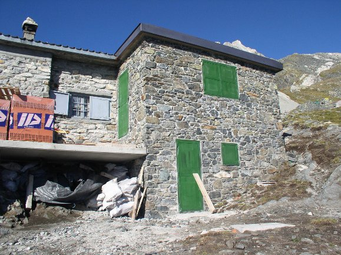
5. La costruzione quasi finita, mancano ancora le finiture interne
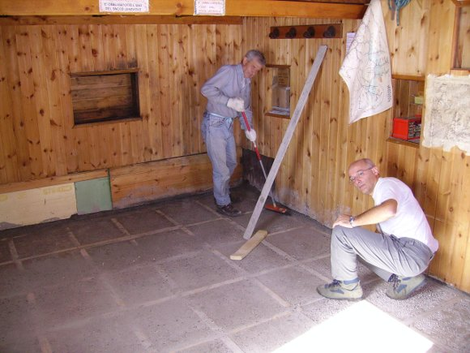
6. Realizzazione del nuovo pavimento nella parte vecchia
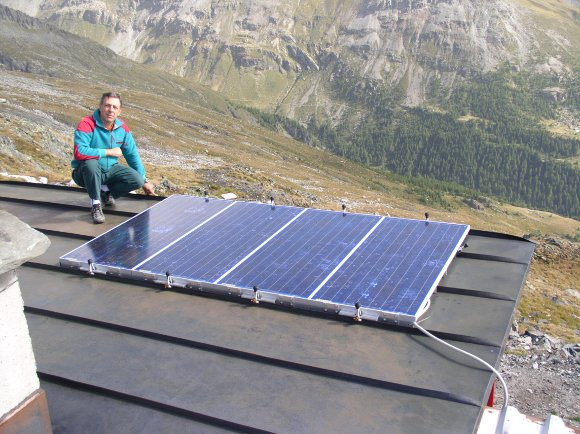
7. I pannelli solari che forniscono energia elettrica al rifugio
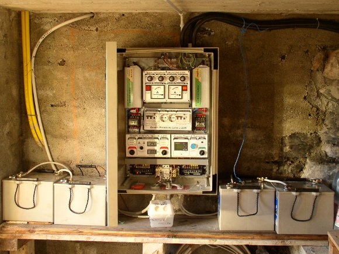
8. Il quadro dell'impianto elettrico che genera 220V 600W
<
>
4. Alcune foto dei lavori eseguiti al rifugio dal 1984 data di acquisizione del CAI Sovico, al 2005
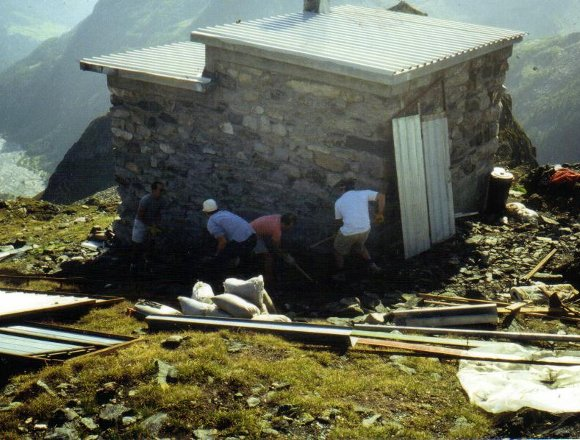
1. Lavori di costruzione del primo bivacco/magazzino a lato del rifugio
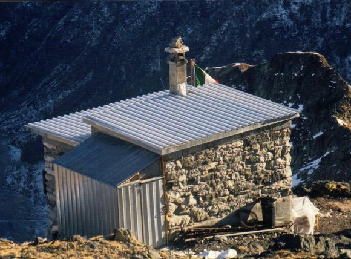
2. Il bivacco alla fine dei lavori
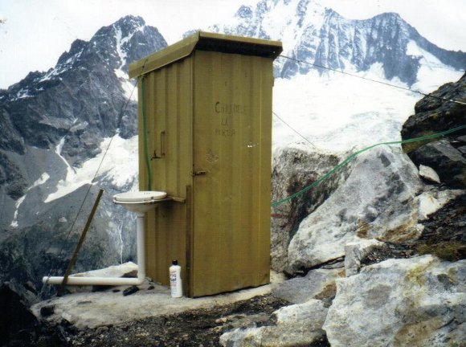
3. Il primo bagno era piccolo ma con un meraviglioso panorama
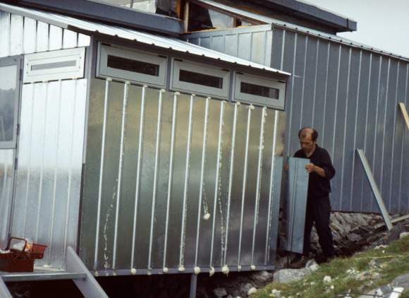
4. La costruzione della piccola cucina di lamiera
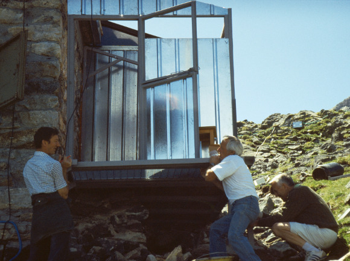
5. La costruzione della piccola cucina di lamiera
<
>
{% endblock %}